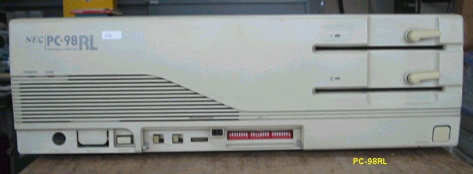
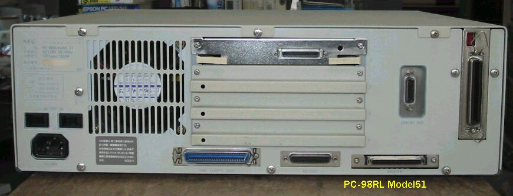

PC98RL model51
PC98RL model51 前面 この98は普通の98より一回り大きいです。

PC98RL model51の後ろ側 ハイレゾビデオのコネクタが見えます。

PC98RLの仕様
このPC98RLの主な仕様は次のようなものです。
CPUクロック ： μPD70116 8MHz,386 20M/16MHz
拡張スロット数 ： 4
標準実装ドライブ FDD ：5インチ1M/640KFDD*2
内蔵インタフェースコネクタ：1MFDDI/F プリンタI/F RS-232CI/F
：マウスI/F デジタルB/WI/F アナログCRTI/F
サウンド機能 ：PC-9801-26K
消費電力 標準 (W) ：143 最大 (W) ：185
外形寸法 本 体 (mm) (W)：470 (D)：405 (H)：150
重量 本体 (Kg) ：13.8
(2003/11/08記)
変わった98のページに戻る